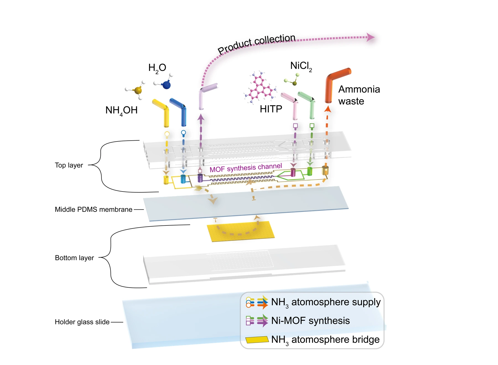
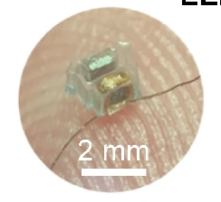

Research

Microfluidic Systems and Automation
Microfluidic transport, continuous synthesis and automated diagnostics.
- Equipment-free liver-function testing
- Ammonia permeation through PDMS membranes
- Automated MOF synthesis
- Portable multiplexed HPV qPCR

Biosensing and Biological Platforms
Molecular measurements, assay image analysis and biological microfluidics.
Explore this research ↗
Soft Biointerfaces and Robotics
Microfabrication and mechanics for wearable sensing and soft robotic actuation.
Explore this research ↗